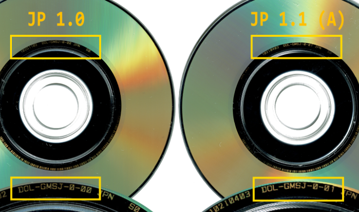
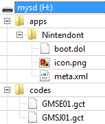
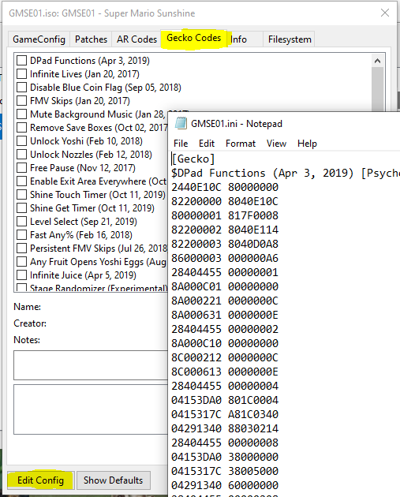
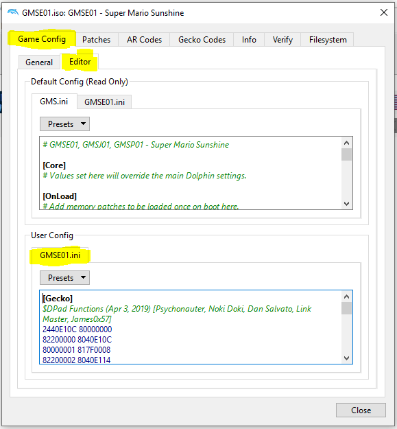

How to install and use practice codes
This page is a simple guide to explain the recommended way to install practice codes on your Nintendo Wii.
1. Preparing your Wii
2. Install and use the cheatfile
3. Troubleshooting
4. Appendix: Cheat Manager (Homebrew)
5. Appendix: Using the codes with Dolphin
1. Preparing your Wii
1.1 Install Homebrew
First of all you're gonna have to install Homebrew on your Wii. Make sure your SD card is formatted to FAT32 and then click this link for a detailed guide on how to get Homebrew on your Wii. Ignore the "So, what's next?" section.
1.2 Install the necessary applications
Using Nintendont is the recommended way to use practice codes. To download the most recent build you can click this link.
Unpack the archive and place the Nintendont folder with all of its contents in the "apps" folder of your SD card. If there is no "apps" folder create one in the root of your SD card.
2. Install and use the cheatfile
2.1 Generate the file
Visit the main site and select your game version from the dropdown menu. Then select all the cheats you want to have enabled from the list, choose GCT as file format and hit "Download". The name of the file you downloaded should be "GMSX01.gct" with X being E, P or J depending on the version you selected.
Note: JP 1.0 and JP 1.1 both use the same ID (GMSJ01). To identify if you own JP 1.0 or 1.1 check the back of your disc. It'll read "DOL-GMSJ-0-00" for 1.0 and "DOL-GMSJ-0-01" for 1.1:

2.2 Copy the file onto your SD card
Create a "codes" folder in the root of your SD card if there is none and copy the GCT file you just downloaded into that folder. This is what the resulting folder structure should look like on your SD card (the .gct files might be different depending on the version you chose):

2.3 Use the codes
Open your Homebrew channel and from there launch Nintendont. Select SD and then press B on your Gamecube controller to see the settings. In your settings, make sure that "Cheats" are "On". You can switch it on/off by pressing A on your controller. (See image below)

Press B again to return to the game list and launch your game. And with that you're done already.
3. Troubleshooting
3.1 The game doesn't launch / Stuck at black screen
This is not a practice code related issue. You have the following options if that happens to you:
- Restart Nintendont until the game launches (usually takes a few attempts).
- Connect your Wii to the internet before launching Nintendont.
- Wait around 30 seconds on the game selection screen before booting the disc.
- Reinstalling homebrew may fix this issue permanently.
3.2 Nintendont says IOS58 is missing
Here's a guide on how to install IOS58 for use with Nintendont.
3.3 The game launches but the codes don't work
This can have multiple reasons:
- You don't have cheats enabled: See 2.3 for details.
- You're using an obsolete version of Nintendont. Make sure you use version 4.434 or newer.
- Your cheatfile has the wrong name: Make sure the file is named "GMSE01.gct", "GMSJ01.gct" or "GMSP01.gct". It won't work with names like "GMSE01 (1).gct". Nintendont is very picky!
- Your cheatfile is at the wrong location: Make sure the file is in the "codes" folder of your SD Card. Again, the folder has to be named "codes" (See sample folder structure in section 2.2). If you have a "games" folder, make sure there's no file with the same name in it or its subfolders.
- Your cheatfile is too big: Using too many codes at once can cause Nintendont to disable them since the used
space in the game is limited. Make sure you don't have two incompatible codes selected when downloading the
cheatfile (for example "Level Select", "Fast Any%" and the Stage loader cannot be used
simultaneously).
Note: If you're using Nintendont 4.434 or newer you don't have to worry unless your file is bigger than 8KB. - If you have a USB drive connected and use disc, make sure you select the device that contains the cheats for your disc.
- If you use an ISO your cheat file and ISO must be on the same device (both on the SD card or both on the USB drive).
3.4 The site doesn't show codes or the download button
The main site requires Javascript to work properly. Make sure you have Javascript enabled in your browser.
4. Appendix: Cheat Manager (Homebrew)
The Cheat Manager is a homebrew application that allows you to generate GCTs on your Wii. This way you don't have to redownload your cheatfile everytime you want a different combination. However, you're gonna have to use a Wiimote to control the application
4.1 Setup
You can download the Cheat Manager from WiiBrew. Unzip the archive and copy the contents into the "apps" folder of your SD card.
Using the generator on the main site, select all the codes you want to have available on the cheat manager and choose "Cheat Manager TXT" as file format instead of "GCT" to download a text file formatted for use with the cheat manager. Create a "txtcodes" folder in the root of your SD card if there is none and copy the generated text file into that folder. The name of the text file doesn't matter if you use this application, since the games ID is stored in the textfile.
4.2 Using the Cheat Manager
Launch the cheat manager and grab your Wiimote. Navigate to your textfile using the DPad and select it with "A". On the following screen press "+" to activate and "-" to deactivate a cheat.
After activating your desired codes press "1" to generate the GCT file. The cheatmanager then creates the GCT file in your "codes" folder, overwriting the old one if there's already a GCT with the same name. If you now launch the game with cheats active the new codes will be loaded.
5. Appendix: Using the codes with Dolphin
5.1 Setup
To use the codes with Dolphin choose "Dolphin INI" as file format instead of "GCT" to download the codes formatted for use with Dolphin.
5.1.1 Configuration in Dolphin 5.0 or older
Right click the game in Dolphin and click on "Properties" and on the bottom left corner of the property window click the "Edit configuration" button. Open the text file you downloaded and copy everything following the "[Gecko]" tag below the same tag in the configuration you just opened. If there is no "[Gecko]" tag (it should be the first tag), create one on top of your configuration file. Save and close the configuration file.

5.1.2 Configuration in Dolphin 5.0-11XXX or newer
Right click the game in Dolphin and click on "Properties". IN the "Game Config" section choose the "Editor" tab and paste the contents of the text file you just downloaded into the "User Config" editor.

5.2 Using the codes
Select the "Gecko-Codes" tab in the game properties and check all the codes you want to be active. Most (but not all codes) will work with Dolphin. However, Dolphin has a code limit which is reached rather quickly. So if your game crashes right after it starts, you probably have too many codes active simultaneously.